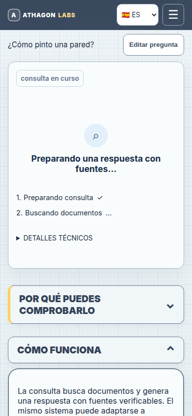
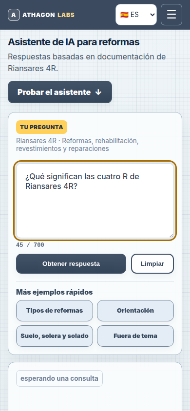
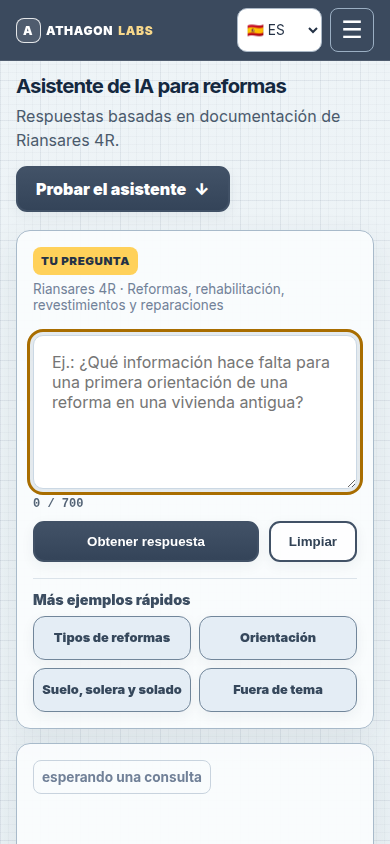
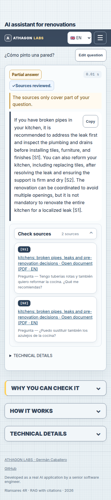
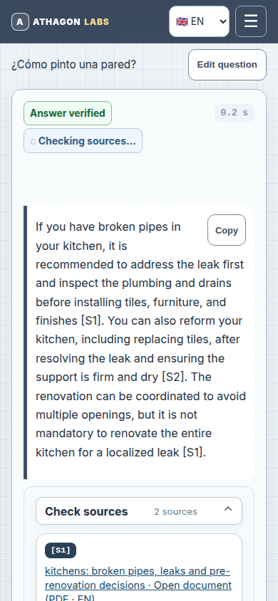
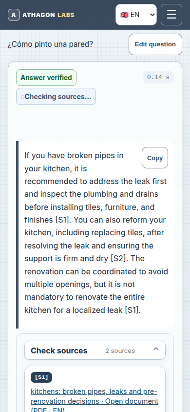
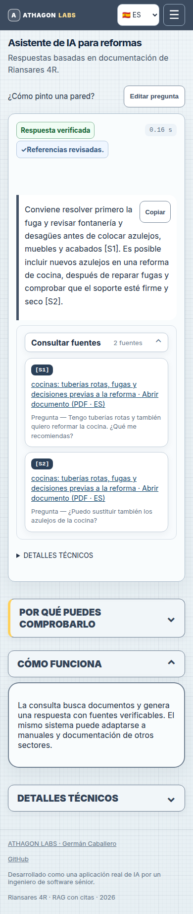
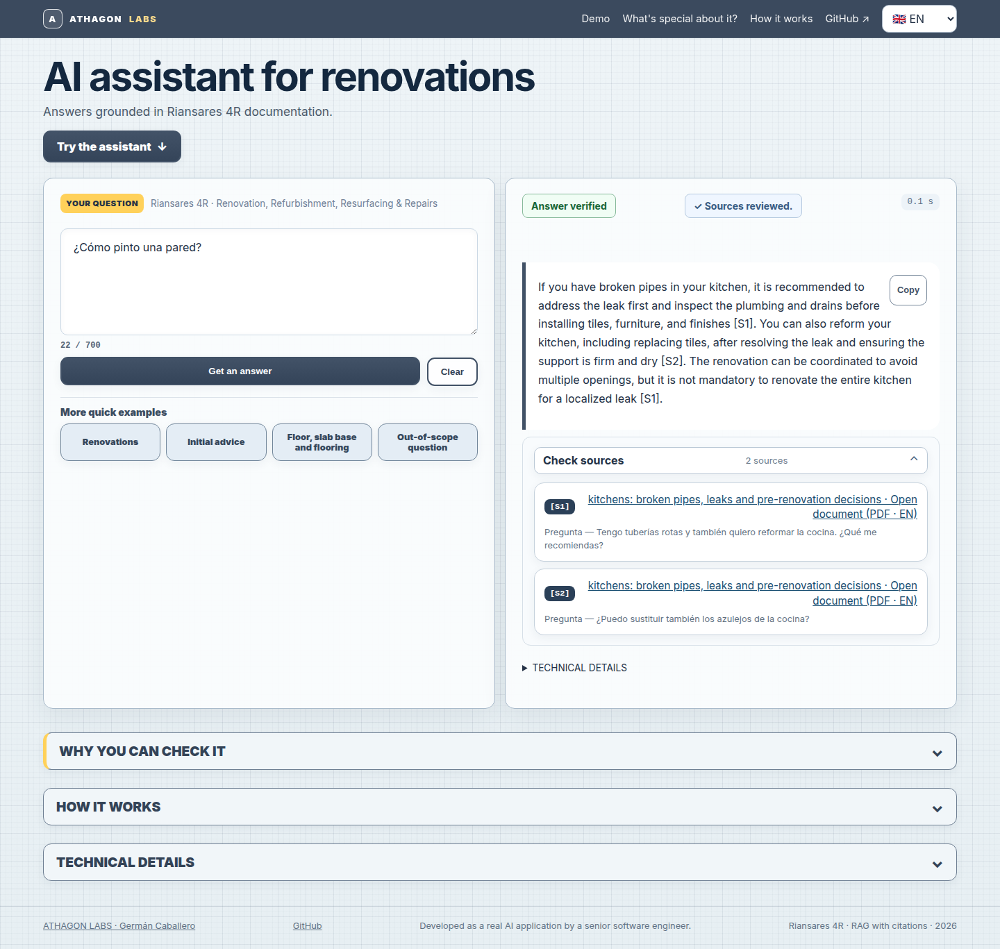

12 capturas representativas. API simulada, Chromium headless y movimiento reducido. El contexto permanece en el documento: el envío posiciona la pregunta y el resultado; al subir reaparecen título y descripción. Resultados · 58 escenarios · Selección reproducible







